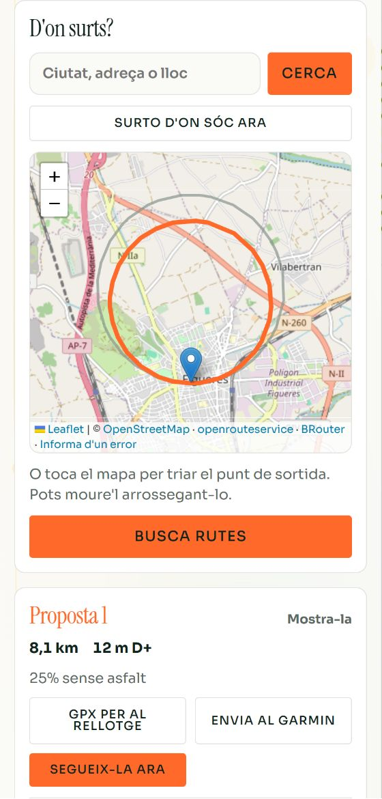
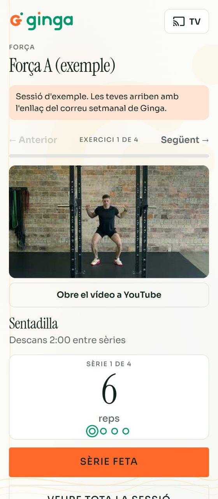

Córrer · Bici · Natació · Triatló · Força
El teu entrenament, revisat cada setmana.
Un pla de resistència personal, amb base científica, que s'ajusta al que fas de veritat. Amb el teu entrenador o sense.
Ja entrenes amb Ginga? La teva setmana
Què és Ginga
Un pla que et coneix
Fer el pla és la part fàcil. El que marca la diferència és revisar-lo cada setmana: què has fet de veritat, com dorms, com estàs, i ajustar el que ve. Ginga ho fa per a cada atleta, cada diumenge.
- 01Llegeix el que has fet: sessions, càrrega, pulsacions en repòs, HRV, son, com et va anar i si et fa mal alguna cosa.
- 02Ho compara amb el pla, i mira els senyals de fatiga i de risc.
- 03Reajusta les setmanes que vénen si les dades ho demanen.
- 04T'escriu un correu personal: com ha anat, el que has fet bé, què millorar i la setmana que ve.
- 05Et prepara la setmana: les sessions al rellotge, la força amb vídeos, les rutes i la tècnica.
Cada diumenge
Més del que pot mirar un entrenador sol
Cada diumenge, per a cada atleta, aplica 129 regles i creua:
- Càrrega
- Forma i fatiga
- Previst contra fet
- Ritme de pujada
- Monotonia
- HRV
- Pulsacions en repòs
- Son
- Sensacions (RPE)
- Dolor i on
- Sessions clau
- Força i zones del cos
- Descàrrega i taper
- Dades que no arriben
I les teves zones surten de les teves dades, no d'una taula genèrica.
Tot connectat
Tot el que necessites, en un sol lloc
Per separat, hi ha apps que en fan una part. Aquí va tot junt i es coordina: la força sap quan tens una sessió clau, la ruta sap quina sessió toca i el correu t'ho explica tot.
Força a la tele
El vídeo de cada exercici, les sèries i les repeticions; amb Chromecast, a la pantalla gran.
Una ruta per sessió
Dius d'on surts i et proposa un circuit que encaixa amb la sessió, amb el GPX per al rellotge i el seguiment al mòbil.
Qualsevol rellotge
A través d'intervals.icu: Garmin, Coros, Polar, Suunto, Apple, Wahoo… Sense cap app nova.
Força i pliometria dins del pla
Coordinades per zones del cos, perquè no xoquin amb les sessions clau.
Tècnica de natació i de carrera
Un vídeo per exercici, just després d'escalfar. La de natació, a la nota de la sessió, que es veu al rellotge a la piscina.
Ginga Força
Força, os i equilibri per a qualsevol adult, només amb el mòbil. I, si en vols, estiraments i ioga.


Per què te'n pots fiar
Decideix la metodologia, no la IA
Cada decisió (quanta càrrega, quan descansar, quan reajustar, què fer davant d'un senyal) surt d'una regla escrita i revisada per entrenadors, amb la seva font científica o el criteri declarat. El codi l'aplica igual per a tothom. La intel·ligència artificial només redacta i proposa, dins d'aquests límits.
Seguretat
Amb entrenador, el que afegeix càrrega ho valida ell. Sense, només dins dels límits del model, revisat per entrenadors certificats: com a molt, un 10% més del que has fet.
Dolor i salut
Si escrius #dolor, l'entrenador ho sap, i davant de certs senyals es deriva al metge. Les dades de salut no surten d'intervals.icu: a la IA, només un resum sense nom.
Transparència
Cada regla diu d'on surt, què diu l'estudi, en qui es va fer i quina part és criteri. Tot és a l'article tècnic de Ginga.
Per a qui
Amb el teu entrenador o sense
Entrenadors
L'anàlisi de cada atleta cada diumenge, amb més senyals dels que es poden revisar a mà. El correu de cada atleta, comprovat, i avisos de dolor, fatiga o dades que no arriben. Més atletes amb el mateix temps.
Clubs
Tot l'anterior, i a més grups per nivells a córrer i natació: una sessió per nivell, i cadascú a les seves zones. A la bici en grup, una ruta llarga i una de curta amb una part comuna; el buscador troba les dues.
Atletes sense entrenador
El mateix sistema, les mateixes regles i la mateixa base científica. Un pla fet per a tu, que es revisa i s'ajusta cada setmana, amb models d'entrenament revisats per entrenadors certificats. No és un entrenador propi, i per això costa menys; però és més segur i més personal que una app on decideix la IA.
La clau és tot junt
Per separat, n'hi ha que en fan una part
| Ginga | Apps amb IA | Plataformes | |
|---|---|---|---|
| Base científica pública, regla per regla | ✓ | ✗ | ✗ |
| Revisa i reajusta cada setmana | ✓ | ✓ | ✗ |
| Personal: HRV, son, dolor, força i zones del cos, tot alhora | ✓ | ~ | ✗ |
| Un correu personal cada setmana | ✓ | ~ | ✗ |
| Força amb vídeos, al mòbil i a la tele | ✓ | ~ | ~ |
| Rutes per a cada sessió, amb GPX | ✓ | ✗ | ✗ |
| Sense cap app nova | ✓ | ✗ | ✗ |
~ En part, segons l'app. Segons la informació pública de cada eina a l'octubre del 2026.
Preu
Una revisió així, feta a mà, són hores de feina cada setmana
Aquí la tens cada diumenge. Preus de llançament, els 6 primers mesos.
Entrenador o club
5 €10 €per atleta i mes
Després, 10 €; 8 € per atleta a partir de 20 atletes.
Atleta sense entrenador
9,50 €19 €al mes
Després, 19 € al mes o 190 € l'any.
Ginga Força encara no té preu.
Com començar
Començar és fàcil
- 1Demana-ho a Vull entrenar amb Ginga: tria Ginga (córrer, bici, natació, triatló) o Ginga Força.
- 2Obre un compte a intervals.icu i connecta-hi el teu rellotge.
- 3Respon un formulari curt: objectiu, dies, molèsties i on faràs la força.
- 4El pla arriba al calendari i al rellotge, i cada diumenge, el correu.
Què és intervals.icu?
Una plataforma web gratuïta on el teu rellotge (o Strava) envia sol cada entrenament. Ginga hi llegeix com entrenes, com dorms i com estàs, i hi posa les sessions, que t'arriben al calendari i al rellotge.
El teu entrenament, revisat cada setmana
Amb el teu entrenador o sense. Explica'ns què busques i et responem per correu.
Vull entrenar amb Ginga